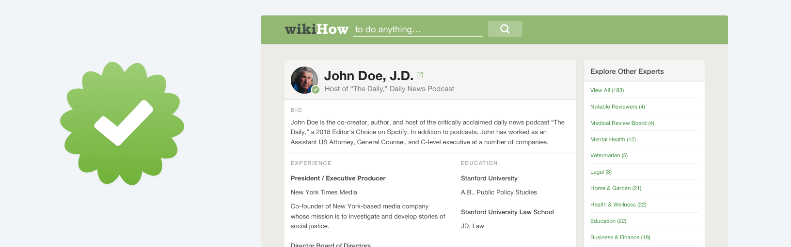

wikiHow Expert Profile Page UX and UI Design
Project
During the summer of 2018 I worked on the UX and UI of the expert profile pages at wikiHow. These pages were created to showcase the credentials of the 500+ experts who verify articles on wikiHow.
Problem
The "expert verified" badge that showed in the corner of verified wikiHow articles lacked authority and trustworthiness because users were unable to easily learn why it should be trusted. The only extra info the user could learn about the expert verifiers were through short written bios and a link to expert's provided websites.
Role
I was the product designer assigned to this project and I worked collaboratively with two product managers and the leader of the Experts Project, routinely meeting and presenting work for feedback. I was responsible for all design and prototyping that took place for this project while also taking on a few product manager tasks.
Education user experience with editing capabilities and achievements version user experience
Solution
The solution to the expert trustworthiness and authority problem was to create profile pages for each expert that would display qualification information. The original idea to have these profile pages was dreamt up by a wikiHow team member, and I was brought on to flesh out the solution.
The core part of these expert profile pages that acts as the solution to the trustworthy issue is the top card, what I call the "resume" section. This area contains an experts title and picture along with their bio, listed experience and either education or achievements. Designing this section allowed users to learn more about who was behind the verification stamp on wikiHow while increasing wikiHow's brand authority.
It was important that this page be built following a set of tight constraints from stakeholders, leading to the design of inline editing capabilities for each part of the resume section as well as styles and formatting being adapted from other parts of the site. My solution also designed around potential Experts team workflow bottlenecks by allowing the pages information to be filled out in stages.
User Research
The solution I came to was derived from initial user research conducted to get a more wholistic idea of what made a verified badge trustworthy. The primary learning from this research was that the ability for users to conduct independent verification research was of paramount importance to them. Users reported wanting an easy way to learn more about a source rather than a statement from wikiHow about why the information can be trusted.

The initial expert index
Further, users expressed that reading a bio of the expert was often insufficient for high stakes categories such as medical and legal articles. While many pieces of qualification info were contained in the existing expert bios, the sentence/paragraph format was not providing the trustworthiness and authority that wikiHow desired.
Early Iterations
I kicked off this design challenge by synthesizing the information gathered from my initial user research and building out rough ideas.
A collection of initial ideation sketches
While meeting with stakeholders to review my initial sketches, two key constraints narrowed down the ideas and provided a platform to move into medium/high fidelity mockups with. Due to the rapid pace that engineering projects move at wikiHow, my solution had to be easy for the engineers to implement. This meant minimal deviation from standard wikiHow styles and formats. The second constraint was that the solution had to rely primarily on information we already had about the expert, as to not bombard the Experts team with work and cause a pipeline bottleneck.
A Jump to Medium/High Fidelity Work
With these constraints in mind, I worked with the stakeholders to decide which ideas to move forward with and and bring into higher fidelity. wikiHow Product Managers often want to see work in high fidelity early in the process as it helps them conceptualize the work that would be needed for implementation.
Through more stakeholder meetings and discussions about engineering priority and availability, I was able to make further adjustments to fit to the constraints.
The final designs would use standard wikiHow formatting for headers, section titles, and body text, and would be composed of three separate "wikiText" areas - areas that are editable through the default editing system already used site-wide. These wikiText areas would ensure that the Experts team could easily make adjustments to the content of the page, while creating significantly less work for the engineering team. In the second card, the display of the expert's verified articles would be repurposed from the wikiHow category pages, further simplifying the engineering work while making minimal sacrifices on the UX.
Final editable wikiText area specifications
A final round of user-testing with the wikiHow community and outside users confirmed that this new page provided an extra layer of trustworthiness to the wikiHow expert verified badge. After adding some final details such as wikiHow edit buttons on a logged in view, I created a developer specification for implementation and worked collaborativly with the front end engineer to implement the pages.